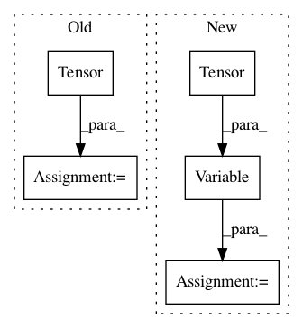

f90d49b9dbb6944693844d9bba22678420452596,models/InnerShiftTripleFunction.py,InnerShiftTripleFunction,backward,#Any#Any#,105
Before Change
spatial_size = ctx.h * ctx.w
for idx in range(ctx.bz):
W_mat = ctx.Tensor(spatial_size, spatial_size).zero_()
for cnt in range(spatial_size):
indS = ind_lst[idx][cnt] // indS is index of the outer-mask
After Change
spatial_size = ctx.h * ctx.w
W_mat_all = Variable(ctx.Tensor(ctx.bz, spatial_size, spatial_size).zero_())
for idx in range(ctx.bz):
W_mat = W_mat_all.select(0,idx).clone()
for cnt in range(spatial_size):
indS = ind_lst[idx][cnt] // indS is index of the outer-mask
// It means this pixel is in the mask, and this line(index: cnt_th)
In pattern: SUPERPATTERN
Frequency: 3
Non-data size: 5
Instances
Project Name: Zhaoyi-Yan/Shift-Net_pytorch
Commit Name: f90d49b9dbb6944693844d9bba22678420452596
Time: 2018-04-23
Author: 574819595@qq.com
File Name: models/InnerShiftTripleFunction.py
Class Name: InnerShiftTripleFunction
Method Name: backward
Project Name: kevinzakka/recurrent-visual-attention
Commit Name: f3c5b75e59717c017fa3779b3f29b725e4ac6d9b
Time: 2018-01-24
Author: kevinarmandzakka@gmail.com
File Name: tests/test_retina.py
Class Name:
Method Name: main
Project Name: eriklindernoren/PyTorch-GAN
Commit Name: fc9e5824ad7bd3094f5012dc6fc3d2348481a2f4
Time: 2019-04-02
Author: eriklindernoren@live.se
File Name: implementations/bicyclegan/bicyclegan.py
Class Name:
Method Name: sample_images